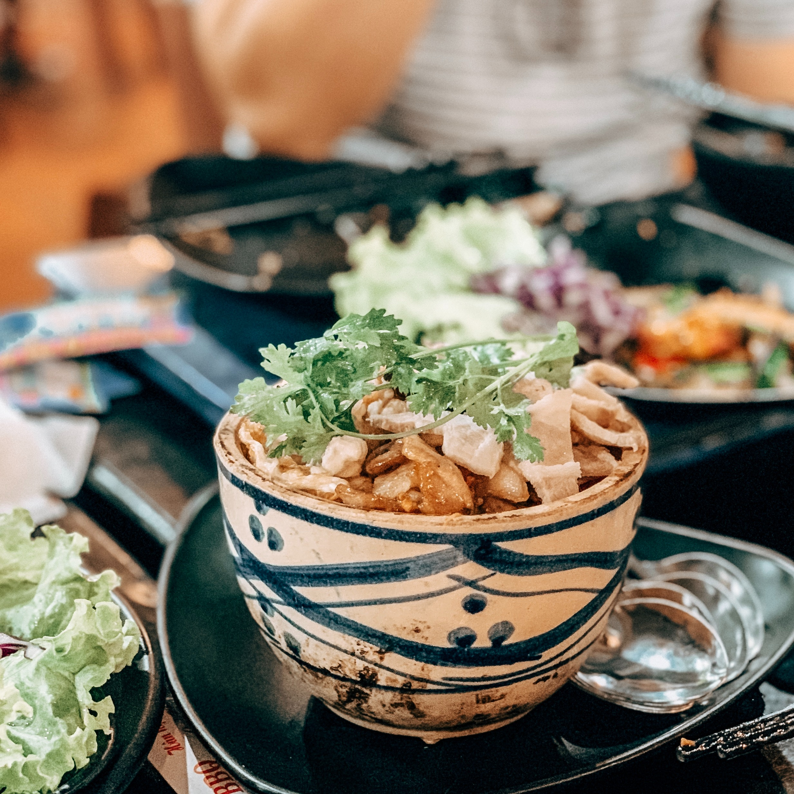
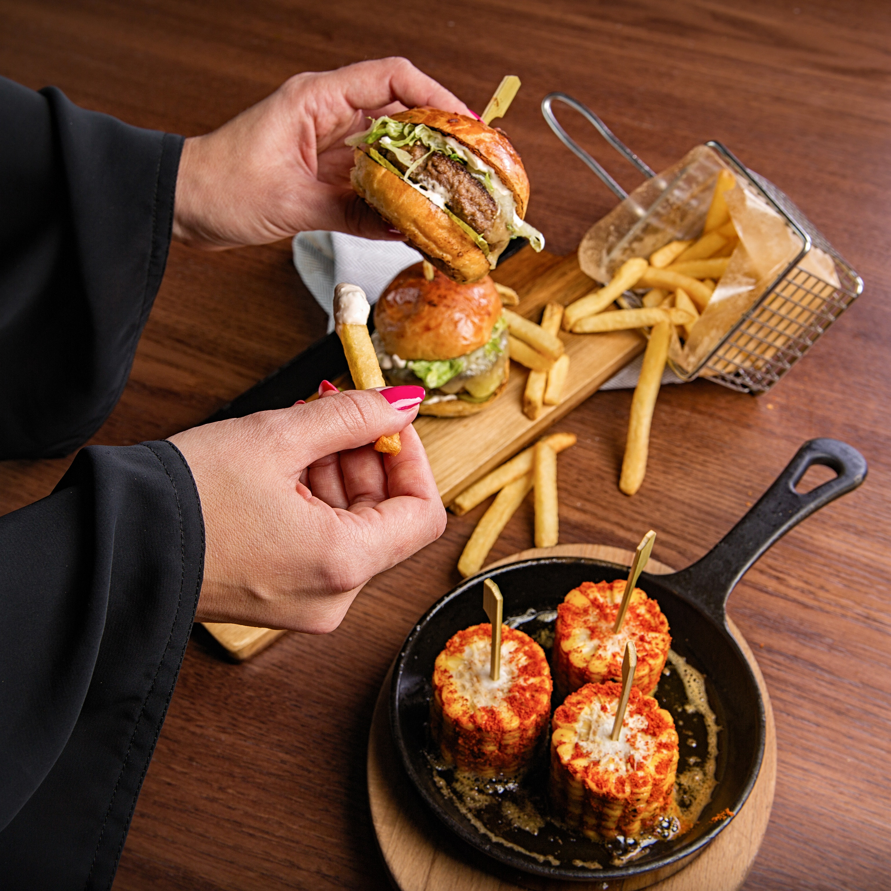
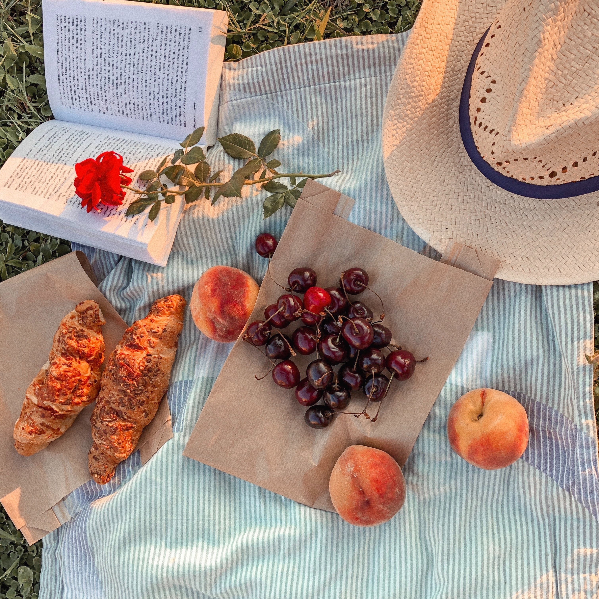
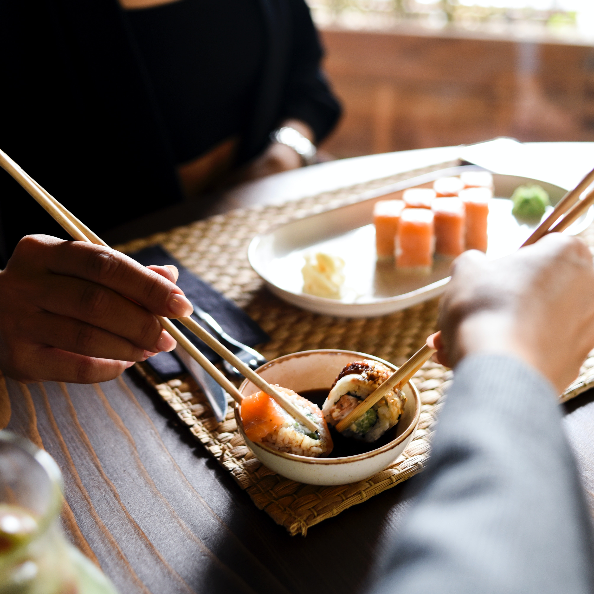

A place to share my adventures as a food explorer in my hometown and to inspire you to support the locals.
Most Recent Discoveries

This place at the nord of the town has delicious rice bowls! With chicken, pork or sea-food.

This place in the town center has creative burgers, each one of them tasting different and delicious!

This place at the south of the town is perfect for buying produce from the local bakeries and farmer's markets and enjoying them at a picnic!

This place at the west of the town has delicous sushi plates, made to share with your friends!
If we want to have these amazing small businesses, we need to actively seek out and support those who put their necks on the line to chase down a dream. It could be a lasting relationship that holds more value in the long run.
– Branch Street Coffee Roasters
Join us into our adventures! It's time!
Sign up to be always up to date with our reviews and events! Join us in our adventures and take part to the monthly meet-ups!